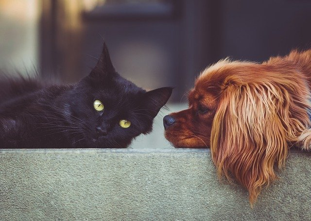

Shreya Sitting Services
Looking for a pet sitter? Trust us to love your pets when you're not there!

Pet Sitting
Our company has been providing excellent services for over twenty years. Our pet sitters are thought, respectful animal lovers who are well trained in per care. We love animals - and it shows in the quality of our services.
Pet sitters are available for scheduled visits to provide food and water, perform clean-up duties, and provide love and companionship for pets. In addition, sitters can provide overnight service or long-term stays if needed.
Check our Competitve Pricing
| Service | Price in $ | Timeframe | Description |
|---|---|---|---|
| Daily Fish Check | 7.00 | Per Day | Enter home to check fish tank and feed fish. |
| Daily Pond Check | 10.00 | Per day | Enter home to feed fish, check pond level and pump function. |
| Weekly Pond Check | 30.00 | Per Week | Minimum of five weeks. Enter home to feed fish, check pond level and pump function. Includes pond top-off and one pump flush. |
| Daily Cat Check | 10.00 | Per Day | For up to three cats - enter home daily to feed, water, and clean litter. |
| Daily One-Dog Check | 50.00 | Per Day | Enter home 3 times daily to feed, water, and potty. Includes one 30-minute walk. |
| Daily Two-Dog Check | 80.00 | Per Day | Enter home 3 times daily to feed, water, and potty. Includes one 30-minute walk. |
| Overnight House/pet Sit | 100.00 | Per Day | Three-night minimum. Sitter on premisis overnight and present for at least 14 out of each 24-hour period. Includes daily care for up to three pets. |